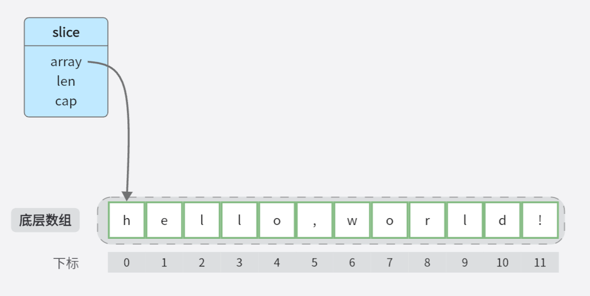

slice
go version is go1.20.4
一、底层存储
在Go语言中，Slice（切片）是一个灵活的、可变长度的序列。Slice提供了对数组或其他切片的部分或全部元素的引用，可以动态地增加或减少其长度。Slice是构建在数组之上的一种抽象数据类型，提供了更便捷和灵活的数组操作方式。
slice 的运行时结构：

二、常见操作
2.1 使用 make 创建和初始化 slice
这条语句会调用 makeslice 方法:
func makeslice(et *_type, len, cap int) unsafe.Pointer {
mem, overflow := math.MulUintptr(et.size, uintptr(cap))
if overflow || mem > maxAlloc || len < 0 || len > cap {
// NOTE: Produce a 'len out of range' error instead of a
// 'cap out of range' error when someone does make([]T, bignumber).
// 'cap out of range' is true too, but since the cap is only being
// supplied implicitly, saying len is clearer.
// See golang.org/issue/4085.
mem, overflow := math.MulUintptr(et.size, uintptr(len))
if overflow || mem > maxAlloc || len < 0 {
panicmakeslicelen()
}
panicmakeslicecap()
}
return mallocgc(mem, et, true)
}
这段代码是Go语言中的内部函数makeslice的实现。它用于创建一个切片（Slice），并返回切片底层数据的指针。
代码解释如下：
-
函数签名：
func makeslice(et *_type, len, cap int) unsafe.Pointer，它接受三个参数：et表示切片元素类型的反射信息，len表示切片的长度，cap表示切片的容量。 -
参数校验：代码首先进行了一系列的参数校验。它使用
math.MulUintptr函数计算切片的内存大小，根据切片元素类型的大小（et.size）和容量（cap）相乘。如果计算结果溢出、超过了最大内存分配限制（maxAlloc）或者长度（len）超出了容量（cap），则会触发panic，抛出相关错误。 -
内存分配：如果参数校验通过，就会调用
mallocgc函数来分配切片的内存。这里的mallocgc是Go语言中的内存分配器，它根据指定的内存大小（mem）和元素类型（et）来分配内存，并返回指向切片底层数据的指针。 -
返回值：
makeslice函数最终返回分配的内存指针（unsafe.Pointer类型），它可以被转换为切片类型。
mallocgc 的大致过程
mallocgc函数用于在堆或栈上分配内存。该函数接受三个参数：size表示要分配的内存大小，typ表示分配对象的类型，needzero表示是否需要将内存清零。
首先，函数检查当前的gcphase（垃圾回收的阶段），如果gcphase为_GCmarktermination，则抛出异常。
接下来，函数处理一些特殊情况，例如size为0时，直接返回一个指向zerobase的指针，表示分配了一个大小为0的对象。
然后，函数获取当前的G（goroutine）并将mallocing标志设置为1，以防止在分配过程中被垃圾回收器抢占。接着，函数根据分配大小选择不同的路径进行内存分配。
对于小对象，分配过程包括以下步骤： - 如果对象是无扫描（没有指针）的并且小于等于maxTinySize（16字节），则使用tiny allocator进行分配。tiny allocator将多个小的分配请求合并为一个内存块，并在所有子对象都不可达时释放该内存块。对象不需要显式释放。 - 否则，根据对象的大小选择适当的size class，并从mcache的free list中分配内存。如果需要清零内存，则进行清零操作。
对于大对象（大于32kB），分配过程包括以下步骤： - 如果垃圾回收正在进行，则分配一个large object span，并将对象标记为黑色（在GC过程中分配的对象）。 - 否则，分配一个large object span，并将对象标记为白色（非GC过程中分配的对象）。
接下来，函数处理分配后的一些后续操作，例如更新统计信息、处理race detector和memory sanitizer等。
最后，函数根据需要调用垃圾回收器，并返回分配的内存指针。
总之，这段代码实现了Go语言的内存分配器的核心逻辑，根据对象大小选择不同的分配路径，并处理一些特殊情况和后续操作。
2.2 删除元素
-
保证剩下元素有序
-
不保证剩下元素有序
2.3 克隆
三、特性
3.1 动态扩容机制
- 什么时候扩容
- 策略是什么
slice 大致的扩容过程：
-
首先，当一个slice的长度超过其容量时，Go语言会为该slice分配一个更大的底层数组。新分配的底层数组长度通常是当前容量的两倍，但是当slice的长度很小（小于1024）时，每次扩容后的长度会比当前容量增加一倍。
-
然后，Go语言会将原始数据复制到新分配的底层数组中。
-
最后，Go语言会更新slice的长度和容量信息，使其反映新的底层数组。
这个自动扩容的过程是透明的，开发者无需手动操作，可以通过使用append()函数来添加元素到slice中，Go语言会根据需要自动扩容。例如：
在这个例子中，如果slice的容量不足以容纳新元素4，那么Go语言会为slice分配一个新的底层数组，长度为原来的两倍，并将原始数据复制到新数组中。然后，新元素4会被添加到新数组的末尾，最后更新slice的长度和容量信息。
由于自动扩容可能涉及到内存分配和数据复制，所以频繁的扩容操作可能会导致性能问题。为了避免频繁的扩容，可以通过预先设置slice的容量，以减少扩容的次数。可以使用内置函数make()来创建指定长度和容量的slice，例如：
在这个例子中，slice的长度为0，但是它的容量为10，这意味着它可以容纳最多10个元素。当需要添加元素到slice时，如果容量不足，Go语言会自动扩容，但是扩容的次数会减少，从而提高性能。
更详细的扩容过程：TODO
3.2 传递和修改 slice 的行为
3.3 如何避免 slice 的内存泄漏和不必要的拷贝
-
避免暂时性的内存泄漏
如果切片元素引用着其他值（如指针、切片、映射），应该重置多出来的元素槽上的元素值，避免暂时性的内存泄漏
type Person struct { Name string Age int } func main() { people := []*Person{ {Name: "Alice", Age: 25}, {Name: "Bob", Age: 30}, {Name: "Charlie", Age: 35}, } // 删除第二个元素 copy(people[1:], people[2:]) people[len(people)-1] = nil // 将最后一个元素设置为零值 people = people[:len(people)-1] // 处理被删除的元素 // ... }在上面的示例中，我们使用 copy 函数将第三个元素复制到第二个元素的位置，并将最后一个元素设置为零值。这样做可以确保被删除的元素所引用的值被及时释放，从而避免内存泄漏